MP3
前言/音频知识点汇总
音乐理论学习仓库：GitHub - BenzLeung/benz-audio-engine: 一个简单的基于 Web Audio API 的音效引擎
小demo：Web Audio API 小教程
- 音频文件分析思路
- 直接听音乐：左右声道有无区别？（立体声）是否是很奇怪的呲呲声？（SSTV/波形隐写/AFSK）
- Audacity频域分析看波形是否有隐藏信息/不同采样率下有没有隐藏信息
- 查看封面图片是否涉及图片隐写
- 查看文件属性隐藏信息
- 常用的工具加密？MP3 → MP3Stego / WAV → Stegolsb
- 查看帧头的特殊位有无隐写（copyright/private/original）
WAV文件基础知识点
-
PCM（Pulse Code Modulation，脉冲编码调制）就是把连续的模拟声音波形用数字方式直接采样、量化后存起来的最朴素音频表示。是WAVE 里
datachunk 里最常见的一种音频数据编码方式 -
**RIFF（Resource Interchange File Format）**是微软/IBM 的一种容器格式规范（文件打包方式），核心思想是：文件由很多块（chunk）组成，每块都有 类型 + 长度 + 数据。
-
WAV 本质上是 RIFF 容器里装的音频数据（最常见是 PCM）。它的结构可以理解成：一个文件头 + 一堆 chunk（块），每个块都有自己的类型和长度。
（1）RIFF/WAVE 文件头总体结构（文件最开始 12 字节）
| 字段 | 偏移 | 长度 | 类型/端序 | 典型值 | 含义 |
|---|---|---|---|---|---|
| RIFF ID | 0x00 | 4 | ASCII | "RIFF" |
声明是 RIFF 容器 |
| RIFF ChunkSize | 0x04 | 4 | uint32 LE | 文件大小-8 | 从 0x08 到 EOF 的字节数（不含前 8 字节） |
| WAVE ID | 0x08 | 4 | ASCII | "WAVE" |
声明这是 WAVE 类型的 RIFF |
从 0x0C 开始是一串子块（SubChunk），常见顺序：
fmt（必有）→（可选fact/LIST/bext/iXML…）→data（必有）
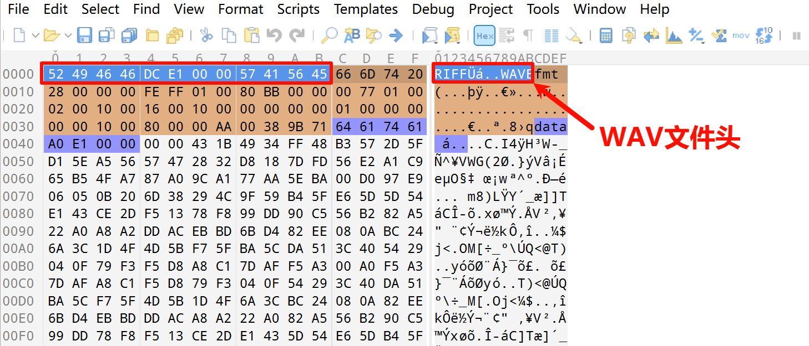
（2）通用 Chunk 结构（适用于 fmt/data/LIST/fact 等所有块）
| 字段 | 位置 | 长度 | 类型/端序 | 示例 | 含义 |
|---|---|---|---|---|---|
| ChunkID | chunk 起始 | 4 | ASCII | "fmt " / "data" |
块类型 |
| ChunkSize | ChunkID 后 | 4 | uint32 LE | 16 / N | ChunkData 的字节数 |
| ChunkData | ChunkSize 后 | ChunkSize | bytes | … | 块内容 |
对齐规则（很关键）：
| 规则 | 含义 |
|---|---|
| 若 ChunkSize 为奇数 | 末尾通常补 1 字节 pad 以保证下一个 chunk 从偶数地址开始（对齐用，不计入 ChunkSize） |
-
fmt块（PCM 最常见；描述怎么解码音频）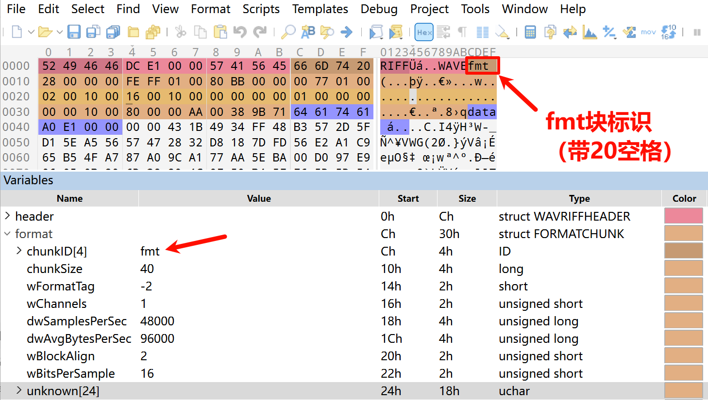
【1】
fmtchunk 头
| 字段 | 相对 fmt 起始偏移 | 长度 | 类型/端序 | 典型值 | 含义 |
|---|---|---|---|---|---|
| ChunkID | +0x00 | 4 | ASCII | "fmt " |
格式块标识（注意有空格） |
| ChunkSize | +0x04 | 4 | uint32 LE | 16（PCM） | fmt 数据长度；PCM 通常为 16，扩展格式可能更大 |
【2】PCM（ChunkSize=16）标准字段（小端）
| 字段 | 相对 fmt 数据区偏移 | 长度 | 类型/端序 | 典型值 | 含义 |
|---|---|---|---|---|---|
| AudioFormat/wFormatTag | +0x08 | 2 | uint16 LE | 1 / 3 / 0xFFFE | 编码格式：1=PCM；3=IEEE float；0xFFFE=Extensible |
| NumChannels/wChannels | +0x0A | 2 | uint16 LE | 1/2 | 声道数 |
| SampleRate | +0x0C | 4 | uint32 LE | 44100/48000 | 采样率（Hz） |
| ByteRate | +0x10 | 4 | uint32 LE | 176400 等 | 平均字节率：SampleRate * NumChannels * BitsPerSample/8 |
| BlockAlign | +0x14 | 2 | uint16 LE | 2/4/6… | 每个“采样帧”字节数：NumChannels * BitsPerSample/8 |
| BitsPerSample | +0x16 | 2 | uint16 LE | 8/16/24/32 | 位深（每声道每采样点的 bit 数） |
【3】fmt 扩展（WAVE_FORMAT_EXTENSIBLE，AudioFormat=0xFFFE 时常见）
这是“普通 WAV”里也很常见的一种：外壳是 Extensible，但 SubFormat 指向 PCM 或 float。
| 字段 | 位置 | 长度 | 类型/端序 | 含义 |
|---|---|---|---|---|
| cbSize | 紧跟 BitsPerSample 后 | 2 | uint16 LE | 扩展区长度（后续扩展字段大小） |
| ValidBitsPerSample | 后续 | 2 | uint16 LE | 有效位数（常等于 BitsPerSample） |
| ChannelMask | 后续 | 4 | uint32 LE | 声道布局位掩码（例如哪一声道是 L/R/C/LFE…） |
| SubFormat | 后续 | 16 | GUID | 真正编码类型（例如 PCM / IEEE float） |
data块（真正的采样数据）
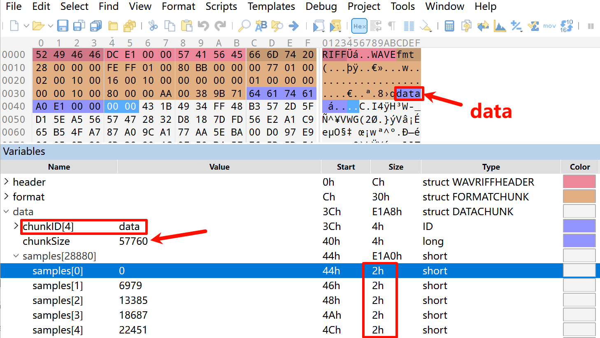
【这里可以看到每个采样点samples[i]都是16位，这意味着文件的采样点位深（每个采样点的精度）就是16bit：这个数值的大小就是采样点的原始幅度值，即表示波形】
（wav文件的lsb隐写就出自这每一个采样点）
| 字段 | 相对 data 起始偏移 | 长度 | 类型/端序 | 含义 |
|---|---|---|---|---|
| ChunkID | +0x00 | 4 | ASCII | "data" |
| ChunkSize | +0x04 | 4 | uint32 LE | 音频数据字节数 |
| ChunkData | +0x08 | ChunkSize | bytes | 连续采样数据 |
采样排列与数值规则（知识点）：
| 规则 | 含义 |
|---|---|
| 多声道交错（interleaved） | 立体声：L0 R0 L1 R1 ...（按帧交错） |
| 小端存储 | 16-bit PCM：低字节在前（LE） |
| 8-bit PCM 常为无符号 | 0~255，128 作为“零点” |
| 16/24/32-bit PCM 常为有符号 | 二补码表示（0 为中心） |
- 可选块（了解即可，做题时经常是“藏东西的地方”）
| ChunkID | 常见出现时机 | 作用 |
|---|---|---|
fact |
压缩/非 PCM 更常见 | 存放样本数等信息（PCM 通常没有） |
LIST |
任何格式可能有 | 元数据列表（作者、软件、注释…） |
bext |
广播/制作流程常见 | 广播扩展元数据（时间码、描述等） |
iXML |
专业录音流程常见 | XML 形式元数据（设备/场记信息等） |
JUNK |
对齐/占位 | 占位填充，方便后续编辑 |
MP3文件基础知识点
1）MP3文件整体结构
-
[可选：ID3v2 标签(文件头)] → [一串 MPEG Audio Frame（主体）] → [可选：ID3v1/APE 等标签(文件尾)]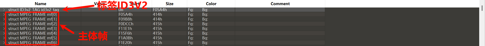
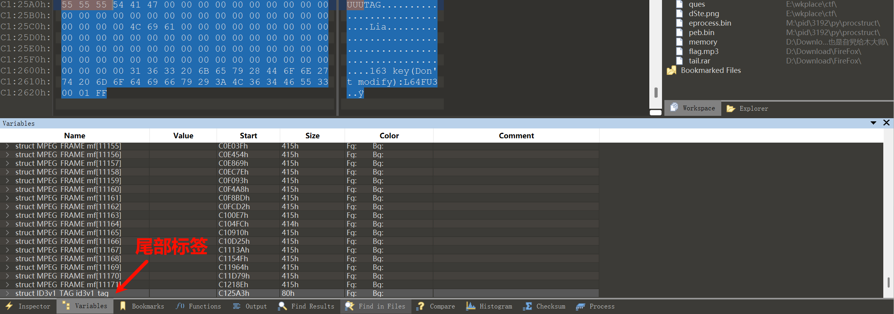
-
看到
FF FB/FF FA基本就是音频帧开始（同步字 0xFFF…）。
2）头部标签（内涵多个信息）
-
ID3v2：文件开头
49 44 33（ASCIIID3）-
size=4B synchsafe（常被 CTF 做手脚：写大/写小导致解析错位）
-
常见帧：
-
TXXX自定义文本（最常塞“key/flag/提示”） -
COMM注释 -
APIC封面图（里面直接塞 JPG/PNG）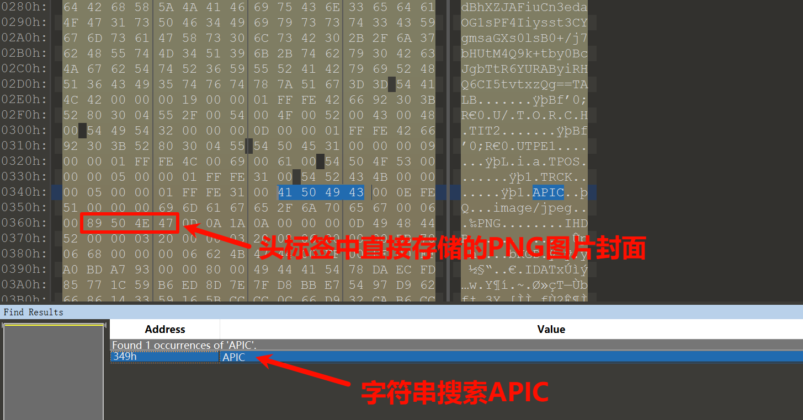
-
TSSE编码器信息
-
-
-
快速定位：在 0~ID3 区间搜字符串
TXXX/COMM/APIC或搜image/jpeg、image/png。
3）音频主体（按帧走，方便定位插入/断点）【最常见的隐写都发生在帧头4字节中】
-
每帧：
Header(4B)+（可选CRC）+ side info + main data -
帧头常见开头：
FF FB（MPEG1 Layer3 无CRC 常见） -
帧长跳转（MPEG1 L3）：
len = floor(144 * bitrate / sample_rate) + padding- 靠这个验证文件是否“真连续帧”，有没有插垃圾数据/隐藏区。
-
private 位（private_bit） 指的是 MP3 每个音频帧帧头（Frame Header）里的 1 个保留/私有用途比特。它的含义很朴素：标准不规定它怎么用，留给实现者/应用自己用。固定为第三个字节的最低为（bit0），可以通过
B[2]&0x01获得；有可能会在这里隐藏信息。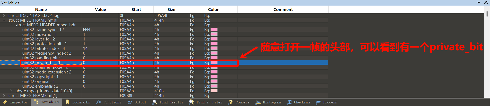
-
Copyright 位， MP3 音频帧（MPEG Audio Frame）头部里的 1 个比特位，用于声明是否受版权保护
-
位于帧头第 4 个字节（header[3]）的 bit3（掩码 0x08）
-
这一位一般不会有0有1，除非是多段不同的音频拼接的
-
MP3 每个音频帧头都有 4 字节 Frame Header（32 bit）
-
typedef FrameHeader
{
// 前两字节 header[0-1]
unsigned int sync:12; //同步信息，表示一帧数据的开始
unsigned int id:1; //算法标识位
unsigned int layer: 2; //层
unsigned int error protection:1; // CRC校验
// 第三字节 header[2]
unsigned int bitrate_index:4; //位率
unsigned int sampling_frequency:2; //采样频率
unsigned int padding:1; //填充位，帧长调节
unsigned int private:1; //保留字
// 第四字节 header[3]
unsigned int mode:2; //声道模式
unsigned int mode extension:2; //扩充模式
unsigned int copyright:1; // 版权位：C语言写好像是bit4，但是实际排布是76···10（bit3）
unsigned int original:1; //原版标志
unsigned int emphasis:2; //强调模式
}
所有的Mp3文件的数据帧开始的两个字节必需是“FF FA”或者 “FF FB”
名称 长度 (bit) 作用 syncword 12 同步头，表示一帧数据的开始，共 12 位，全 1 即 0xFFF ID 1 算法标识位，“1” 表示 MPEG 音频 layer 2 用来说明是哪一层编码 protection_bit 1 用来表明冗余信息是否被加到音频流中，以进行错误检测和错误隐蔽；“1” 是未增加，“0” 是增加 bitrate_index 4 用来指示该帧的 bitrate sampling_frequency 2 用来指示采样频率 padding_bit 1 如果该位为 1，那么帧中包含一个额外槽，用于把平均位率调节到采样频率，否则该位必须为 0 private_bit 1 留做私用 mode 2 定义通道模式 mode_extension 2 用来标识采用了哪一种 joint_stereo copyright 1 表明版权用，“1” 表示有版权，“0” 表示没有版权 original/home 1 表明原版还是复制，“1” 表示原版，“0” 表示复制 emphasis 2 表明加重音类型
-
4）第一帧里的“Info/Xing/LAME”（常见但也能藏）
- 在第一帧 main data 里可能出现
Xing/Info/LAME（时长/seek/编码器）。 - 也常被用作“伪装点”或藏少量字符串。
5）尾部标签
- ID3v1：文件末尾 128B 有
54 41 47（TAG） - APEv2：尾部知道
APETAGEX，键值对；可能有Cover Art (Front)（封面）
6）MISC 常用“搜签名”思路
- 直接在 MP3 里搜这些魔数/字符串定位隐藏内容：
ID3,TXXX,COMM,APIC,APETAGEX,TAG- JPG：
FF D8 FF；PNG：89 50 4E 47 0D 0A 1A 0A - base64 特征：大量
[A-Za-z0-9+/]且末尾=/==
- 封面通常在
APIC，提取后再做 stego/strings/zsteg/LSB/EXIF 等。
听音频本身
立体声道隐写
[BaseCTF2024]捂住X只耳
题目特征：双声道，左右两边声音有细微差距（不一定能听出来）
1 | 立体声只表示音频有两个声道：左(L)和右(R)。 |
该题可视为一种基于双声道差分的音频隐写与线性提取过程，而非传统意义上的密钥体制加密。设背景音频信号为 B(t)，其在左右声道中占主导且近似同相同幅（即“居中”成分）；设待嵌入的隐藏信息为 S(t)，其时域形态表现为离散的短脉冲序列（可对应摩斯码点划）。一种常见嵌入模型为
其中 L(t) 与 R(t) 分别表示左、右声道信号。由于 S(t) 的幅度通常远小于 B(t)，在直接监听或常规播放的混合感知中，S(t) 易被 B(t) 的能量掩蔽而难以辨识。
解码阶段利用线性系统的叠加性与相位反转操作：对右声道进行相位反转（即乘以 -1）并与左声道做线性合成，相当于计算差分
因此，左右声道共有的“共模”成分 B(t) 在差分运算中被抵消，仅保留两声道差异项 S(t)，从而使隐藏脉冲在特定时间段（例如 45 秒后）显著凸显。上述机制对应信号处理中的“相位反转”与“共模抑制（common-mode cancellation）”思想，其核心在于将信息承载于双声道之间的差异结构，而非对音频内容施加某种密钥驱动的非线性变换。
同一思路还存在对称嵌入的变体，例如
则有
差分可进一步增强隐藏信号幅度，而和分量可更纯净地表征背景。
综上，本题的技术要点可概括为：将消息编码为脉冲序列并嵌入到左右声道的差分项中；解题通过相位反转与混音求差实现共模抵消，从而恢复隐藏信号并完成译码。
首先分离两个音道到不同的轨道上
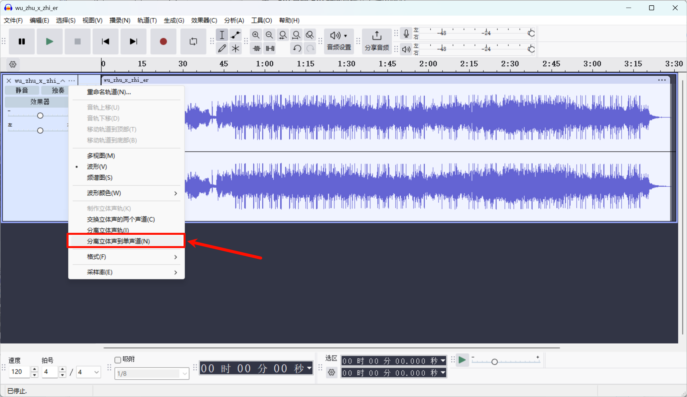
双击（全选）右声道（或左声道）的波形图，点击 效果器 → 反相，将波形上下颠倒：
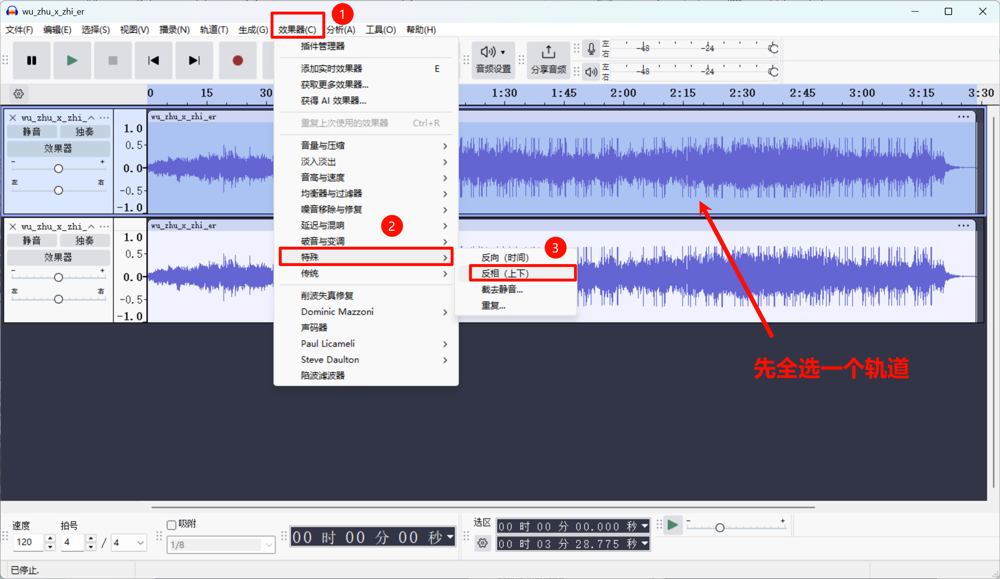
回到多轨会话，播放可发现前 45 秒无声⾳，45 秒开始有嘟嘟声。
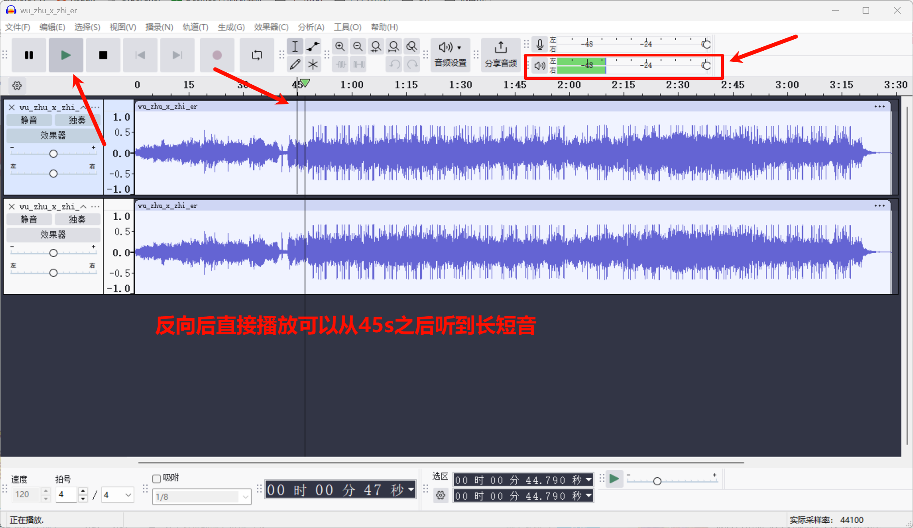
将多轨混音导出音频，然后再导入、放大音量即可看到长短音（直观看波形）：
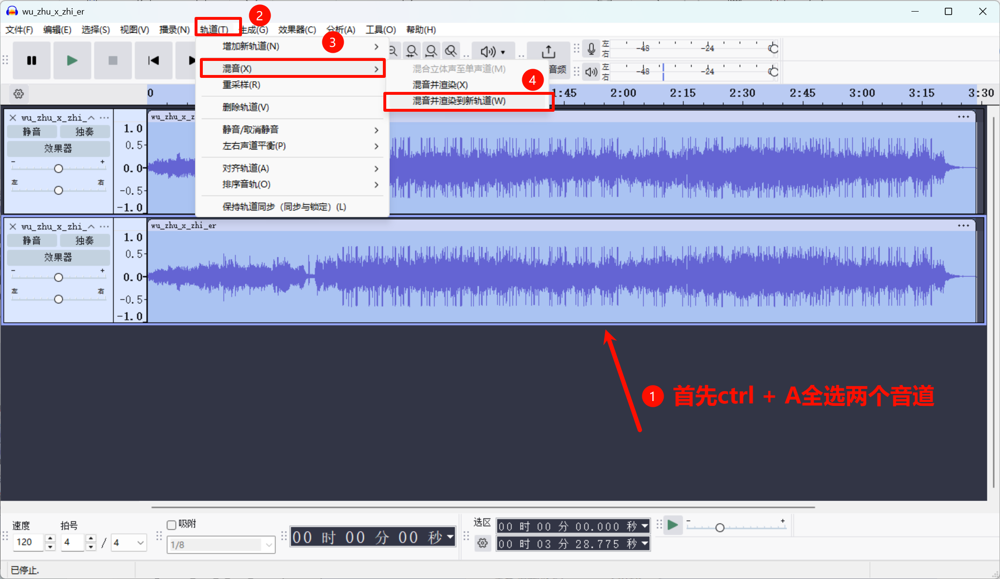
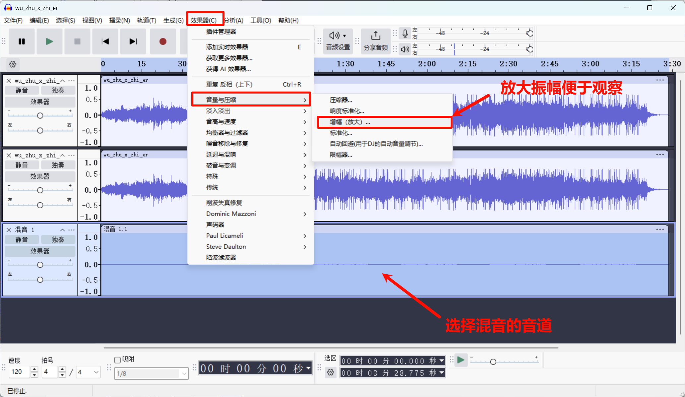
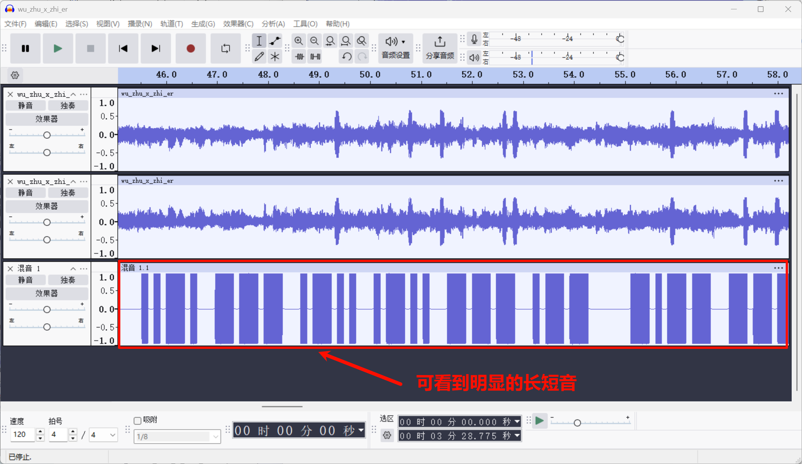
然后手动记录摩斯电码
1 | ..-. --- .-.. .-.. --- .-- -.-- --- ..- .-. .... . .- .-. - |
解码获得flag
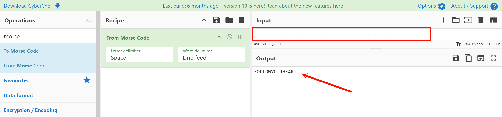
1 | Space → 空格：" "（0x20） |
倒放音频
题目特征：听起来就像是什么东西倒放的好吧😅
题目来源：bugku-我们生活在南京-1
题目描述：他们用无线电中惯用的方法区分字符串中读音相近的字母。
直接在Audacity中倒放即可：首先ctrl + A全选音频
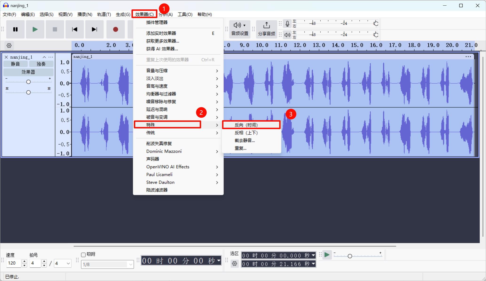
能听出来是一个个念英文字母，按照提示找密码表（每个Code Word对应一个英文字母）
拼接结果
1 | flag{radiowavesacrosstime} |
按键式电话
题目特征：听起来就像是在按键拨号
题目来源：Bugku-Hear Me Out
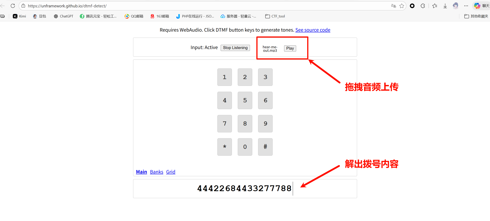
在线网站&&[本地部署](file://D:/MiscTools/Decoder/DTMF/dtmf-detect-master/index.html)
DTMF 音调转换为44422226684433277788
【这个音调转换为按键的原理就是每一个按键的声音都是由两个频率的音频合成出来的：这一点在Grid网格界面看得格外明显】
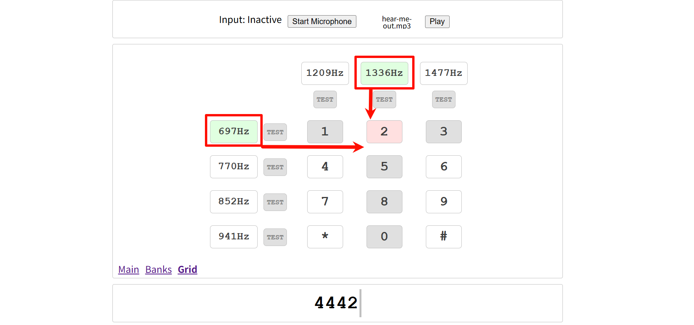
然后使用按键解码网站(SMS Phone Tap Code Cipher (Multitap Mode) Translator - Online Decoder)解码即可：
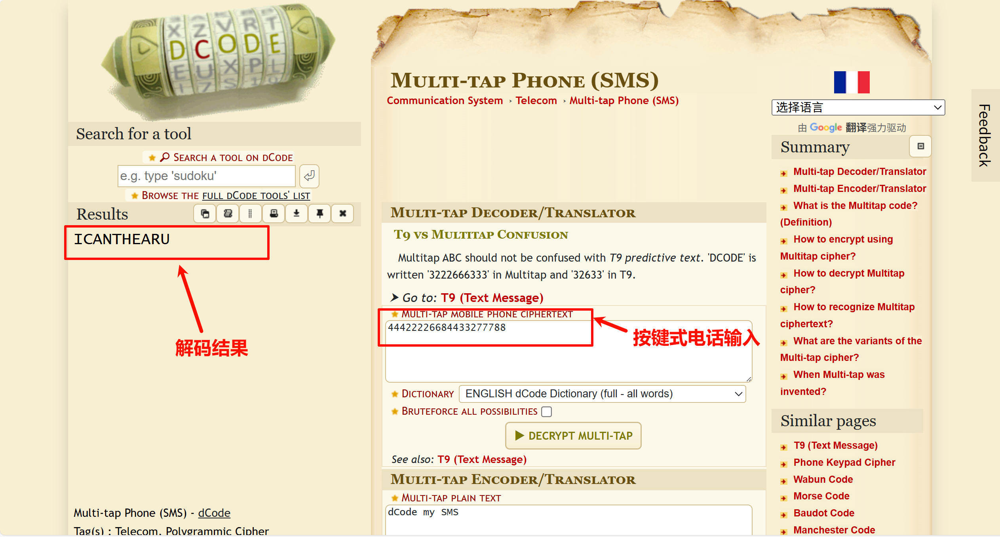
解码原理：
把数字键盘当作一个分组字母表，同一个数字键重复的次数 = 选择该键上第几个字母。
标准手机九宫格映射（最常见的 multi-tap）：
- 2 → ABC（按 1 次 A，2 次 B，3 次 C）
- 3 → DEF
- 4 → GHI
- 5 → JKL
- 6 → MNO
- 7 → PQRS（最多 4 次）
- 8 → TUV
- 9 → WXYZ（最多 4 次)
- 因此本地写的解码脚本出来上面的数字，还需要注意连续输入数字的间隔：比如这个输入的间隔用空格间隔的话就是
444 222 2 66 8 44 33 2 777 88。本地部署（尽量使用空格间隔）[Multi-tap（离线本地版）](file:///D:/MiscTools/Decoder/Multitap/multitap.html)
1 | gigem{ICANTHEARU} |
音频的相关参数
Spectrogram时频谱图
题目特征：ziwa乱叫，听着就像是摩斯密码
题目来源：bugku-我们生活在南京-2
- 打开多视图，查看时频谱图
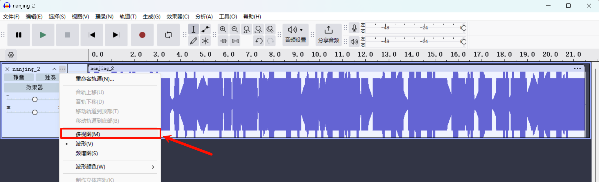
- 可以看到明显的间隔，以及规律的有粗有细可以代表摩斯密码的长短音
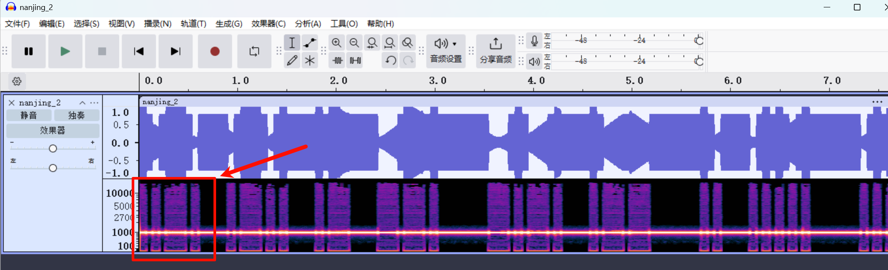
1 | 1.上面那块蓝色波形 |
- 手动翻译成摩斯密码就是
1 | ..-. .-.. .- --. -.-. .-- .. ..... ....- - .-. ....- -.. .. - .. ----- -. -- ...-- - .... ----- -.. |
1 | print("FLAGCWI54TR4DITI0NM3TH0D".lower()) |
采样率
题目特征：听起来正常的音频，没啥特征；但是一般首或尾的音波图有一些奇怪（时频谱图隐写的变种）
题目来源：攻防世界-intoU
1 | 采样率（Sample Rate，单位 Hz）指的是：每秒钟对音频波形取多少个采样点。（声音波形/模拟信号→数字信号） |
【轨道采样率可以直接在当前轨道中查看】
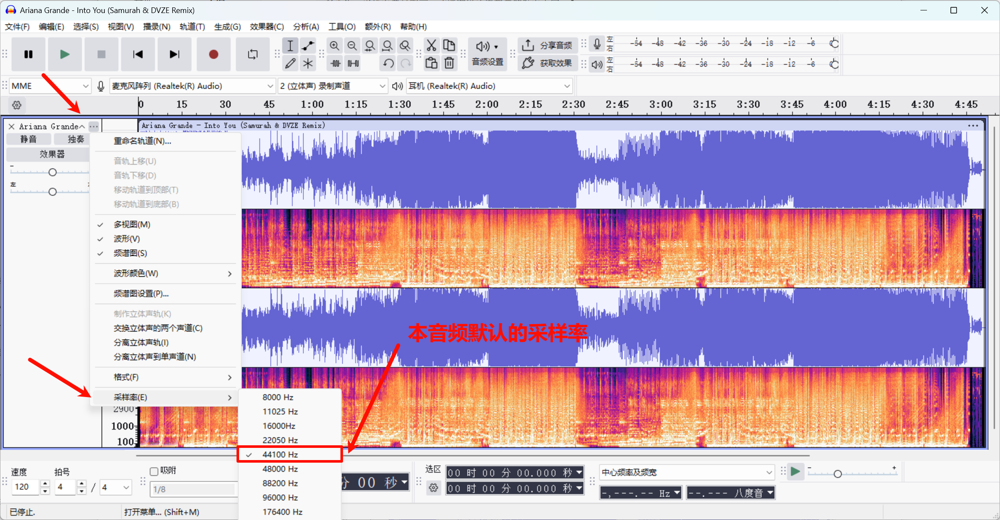
【项目采样率可以在音频设置中查看（一般做题用不到）】
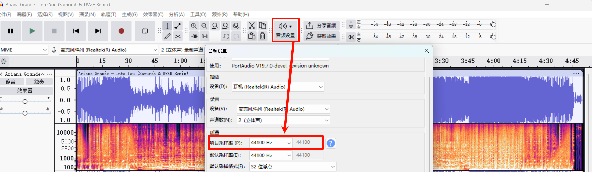
- 直接看时频谱图的话没有什么特征
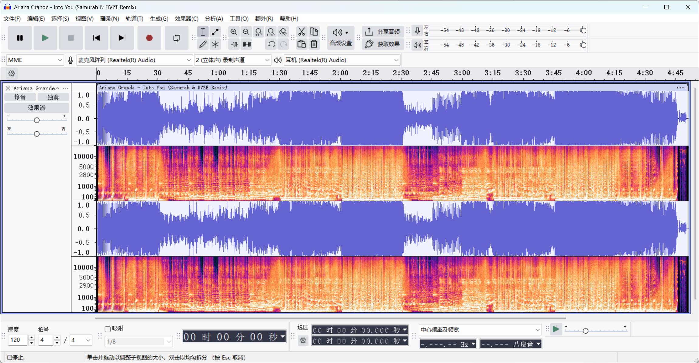
- 但是如果重新设置采样率
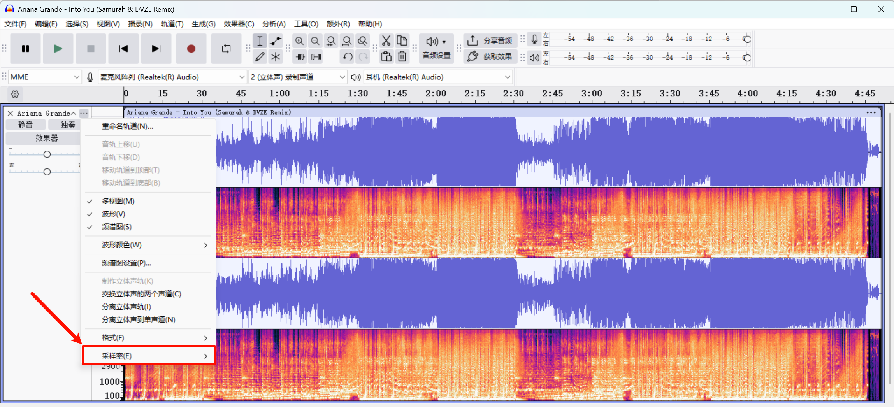
- 轨道采样率设置为900，使得对该轨道的解释方式发生改变，就会发现时频谱图中隐藏的信息
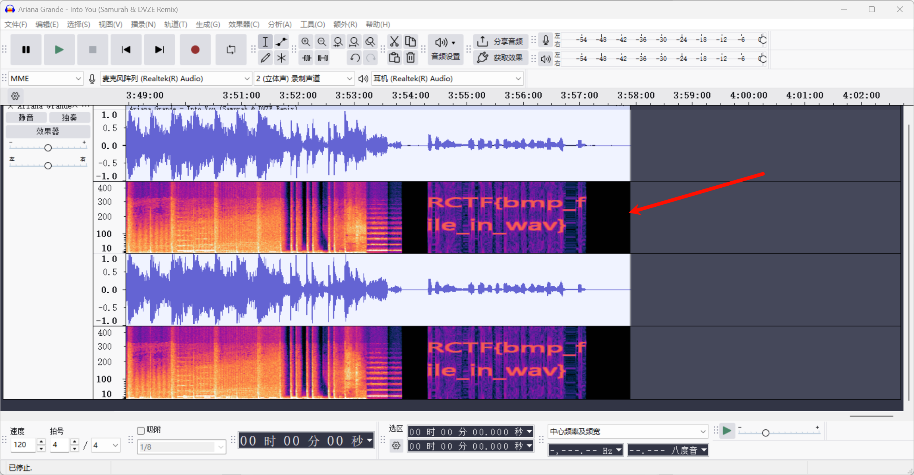
1 | RCTF{bmp_file_in_wav} |
- PS：后来感觉不对劲，为什么能想到调采样率呢？而且这个博客里用到的900Hz已经是一个小的离谱的频率了，一般不会用这个。于是用原采样率去到音频尾部观察时频谱图
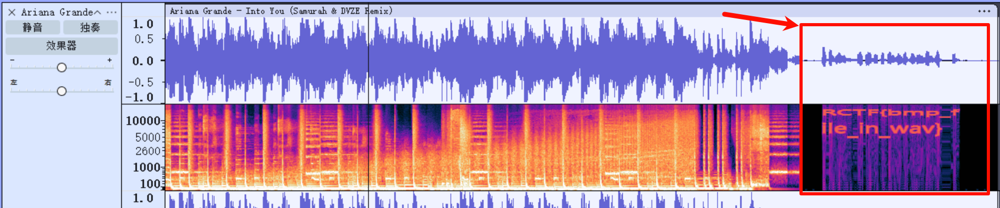
- 额……这不就是普通的时频谱图隐写吗；改一下采样率只是更清晰了而已
- 总结：下次音频波形图前后都先看一下，一般两端喜欢隐藏信息
波形隐写
波形隐写原理就是将波形的高低转为二进制
题目特征：有规律的波形图，听起来也是噼里啪啦的
题目来源：2018网鼎杯-3-Unpleasant_music
参考：Misc - Unpleasant_music - Chictf-Writeups
【这里重点关注的是前面有关MP3波形隐写的内容】
直接看就是单音道的一坨波形，时频谱图也没看出来什么东西
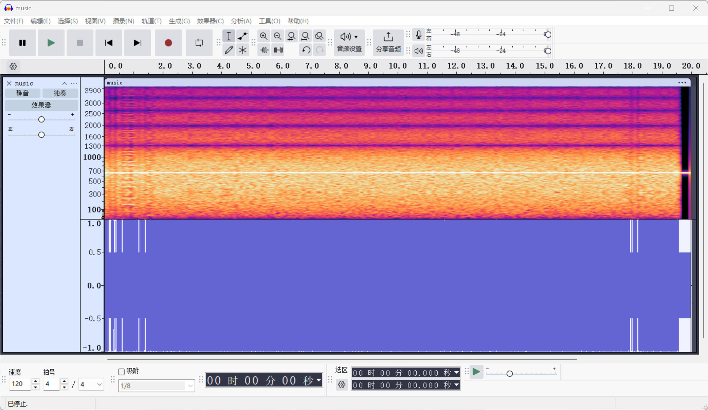
放大波形可以看出来是有规律的小幅度与大幅度波，只有两种形式：可以代表0/1
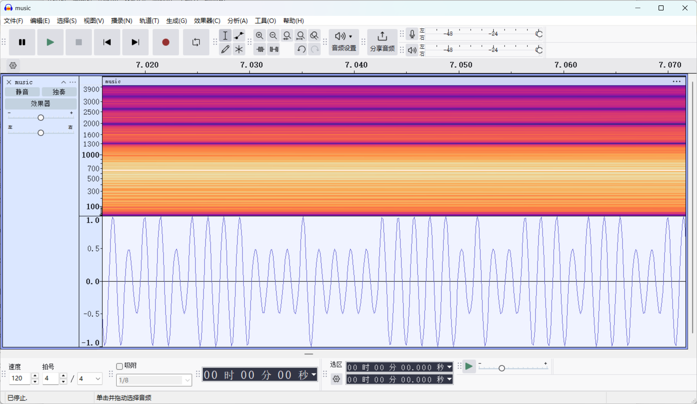
1 | import wave |
从结果可以看出来是一个rar文件的二进制：
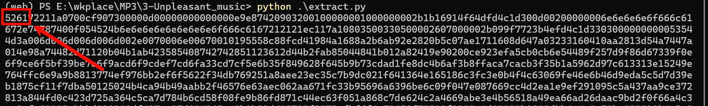
那么既然知道结果是rar文件的话，可以直接修改代码把结果以二进制形式写入rar文件中
1 | import wave, codecs |
但是压缩包里的txt文件并没有flag：
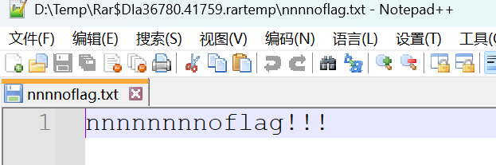
【下面是rar文件的一些知识；具体的去压缩包文件那里学习……】
-
RAR 由可变长的块组成，这些块的没有固定的先后顺序，但要求第一个块必须是标志块并且其后紧跟一个归档头部块。每个块均以以下字段开头
名称 大小 描述 HEAD_CRC 2 bytes CRC of total block or block part HEAD_TYPE 1 byte Block type HEAD_FLAGS 2 bytes Block flags HEAD_SIZE 2 bytes Block size ADD_SIZE 4 bytes Optional field – added block size -
HEAD_TYPE 的值及对应的块类型
HEAD_TYPE 描述 0x72 marker block（标志快：起始） 0x73 archive header（归档头/主头：紧跟marker，描述文档属性） 0x74 file header（普通文件条目） 0x75 old style comment header 0x76 old style authenticity information 0x77 old style subblock 0x78 old style recovery record 0x79 old style authenticity information 0x7A **subblock（服务/附加信息块：存储压缩包的额外特性）【**如带恢复记录、带某些额外属性、或者用特定工具/特定选项打包出来的包】 0x7B terminator（结束块） -
常见的附加信息块
| 子类型标识 | 英文名称 | 含义/用途 |
|---|---|---|
| STM | Stream | 流信息/附加数据流相关的服务信息（常见于附加属性/附加流场景） |
| CMT | Comment | 注释/备注信息 |
| QO | Quick Open（代码里常见为 QOPEN） |
快速打开/快速索引相关的数据 |
| ACL | Access Control List | Windows/NTFS 的权限 ACL 信息 |
| UOW | Unix Owner | Unix 的 owner/group 等所有者信息 |
| AV | Authenticity Verification | 真实性校验/签名一类的附加信息（与 RAR “authenticity”相关） |
| RR | Recovery Record | 恢复记录/冗余校验数据（WinRAR 勾“添加恢复记录”会出现） |
| EA2 | OS/2 Extended Attributes | OS/2 扩展属性数据 |
- 用 010 Editor 打开
result.rar发现有一块的 HEAD_TYPE 是0x7a
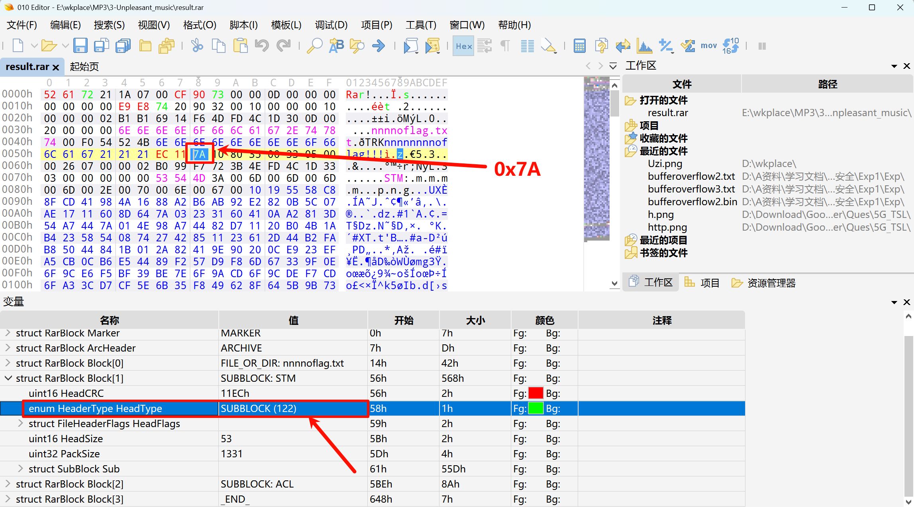
- 这意味着这一块是一个STM的附加信息块（模板也匹配上了：value中显示）；因此尝试修改Block[1]的块头类型
0x7A → 0x74强行作为普通文件块进行解读：获取那个STM文件看看是怎么回事。
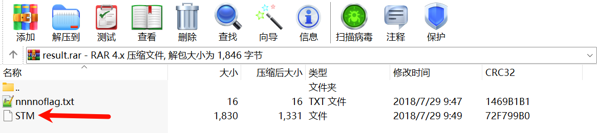
- 用
file看看发现是 PNG 文件，修改一下文件后缀，得到一个被截掉一半的二维码
- 修改高度即可获得完整二维码，扫码获得flag
1 | flag{4dcfda814ec9fd4761c1139fee3f65eb} |
音频的调制与解码
无线电固定码信息分析（PT226X / PT224X）
题目特征：音频短，无声/电流声，重复的波形；可以看出长短波，但不是莫斯电码
参考博客：BUUMisc通关5 | N1key’s Blog
- PT226X / PT224X 这类编码（以及大量兼容款）主要用在低成本无线遥控场景：把地址（区分设备/遥控器）+ 按键功能（开/关/上/下/布防等）编码成一串脉冲码，通过 315/433MHz OOK/ASK 发射，接收端解码后执行动作
固定码遥控信号的构成
钥匙信号(PT226X) = 同步引导码(4bit) + 地址位(8bit) + 数据位(4bit) + 停止码(1bit)
钥匙信号(PT224X) = 同步引导码(8bit) + 地址位(20bit) + 数据位(4bit) + 停止码(1bit)
PT226X
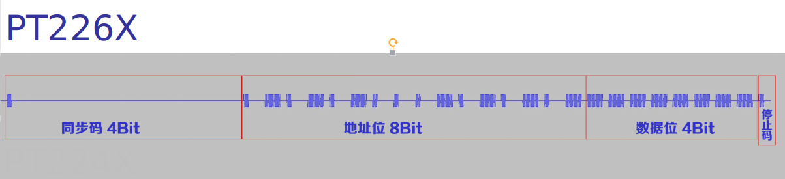
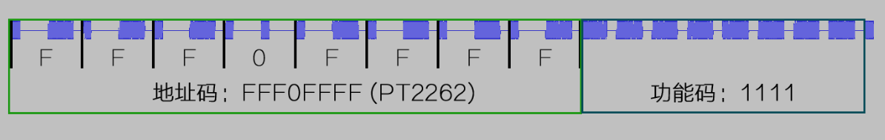
1 | 【两个波合起来算一位……感觉这个bit描述不太准，但是知道那个意思就行QWQ】 |
题目来源：[HDCTF2019]信号分析
- 题目特征就是很多个相似的波形【这里波幅很小，需要先把鼠标放在坐标那里
ctrl + 滚轮放大】；
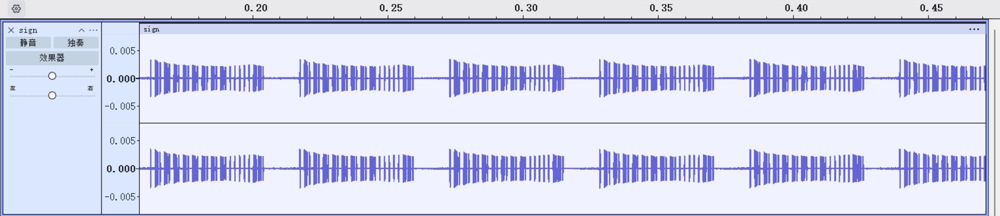
- 直接其中分析一个就行
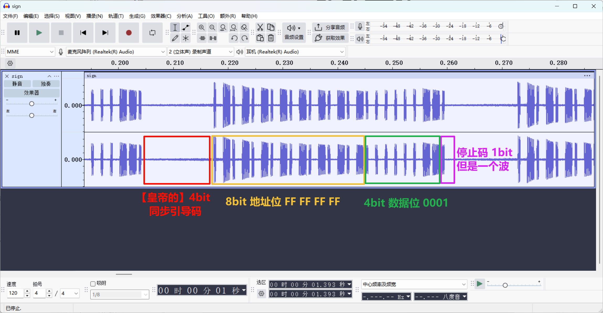
1 | flag{FFFFFFFF0001} |
PT224X
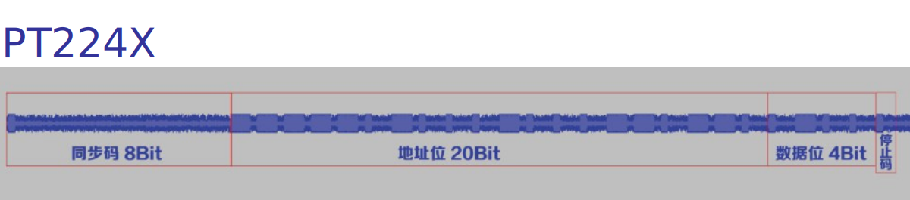
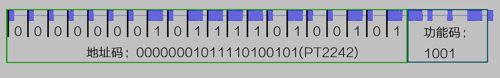
1 | 【一个波就算是一位】 |
一道经典 PT2242 题目[SCTF2019]电单车
1 | 截获了一台电动车的钥匙发射出的锁车信号，3分钟之内，我要获得它地址位的全部信息。 |
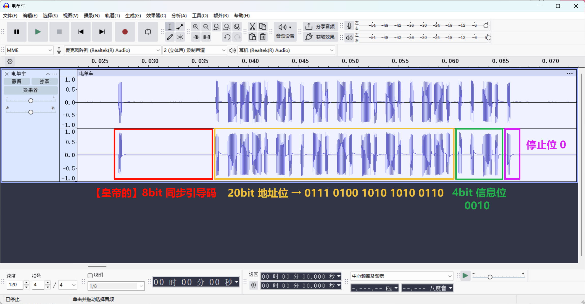
1 | flag{01110100101010100110} |
AFSK1200调制
题目特征：哔哔/尖锐调制音，频谱图在1200Hz与2200Hz附近出现峰值；与下面的WEFAX峰值不同
题目来源：攻防世界-latlong
参考博客：sanjiuMISC师傅的博客（带有附件的）（这里所有附件在百度网盘里进行了备份）
一种无线电音频调制信号，常见于业余无线电的数据通信里（尤其是 APRS/Packet Radio）
Audio Frequency Shift Keying（音频频移键控）
用两种不同的音频频率来表示比特 0/1（或mark/space）。1200 指速率：通常是 1200 baud（每秒 1200 个符号，常被口语化叫1200bps）。
BFSK = Binary Frequency Shift Keying（二进制频移键控）
意思是：用两种不同的频率分别表示比特 0 和 1。
- BFSK 是 FSK 的一个特例（只用两频 → 二进制）
- FSK更泛（可以 M-FSK，用多于两种频率）
AFSK 和 BFSK 的关系
- BFSK：描述调制方式本质——两个频率代表 0/1（通常是射频载波在两个频点之间跳）
- AFSK：描述实现方式——先在音频域做 BFSK（两条音调），再用 FM 发射出去
也就是：AFSK = 用音频来实现的 BFSK（常见两音调）
最经典的 AFSK1200 组合是 Bell 202 这套：
- 1200 Hz（mark）和 2200 Hz（space）两种音调来回切换。
它会作为“音频”送进 FM 电台发射，所以录下来听会像哔哔/尖锐调制音。
在业余无线电里，AFSK1200 最常承载：
- AX.25 packet（类似 HDLC 帧结构）：业余无线电用的数据包/链路层协议，规定一帧里怎么写呼号地址、路径和校验。
- APRS（位置、短消息、状态等，跑在 AX.25 上面）：跑在 AX.25 里的应用内容，用来发位置、短消息、状态、气象/遥测等信息。
- 全选音频后在分析中绘制频谱图
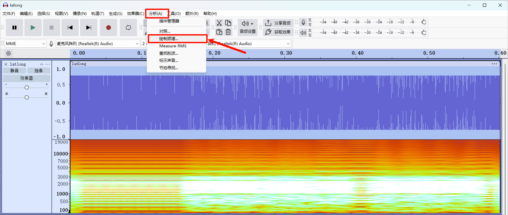
这个频谱图展示的是各个频率成分有多强。
- 横轴（Hz）：频率。越往右频率越高。
- 纵轴（dB）：强度/能量（相对值）。越靠上表示该频率成分越强。
- 紫色形状：该段音频在不同频率上的能量分布（FFT 结果）。
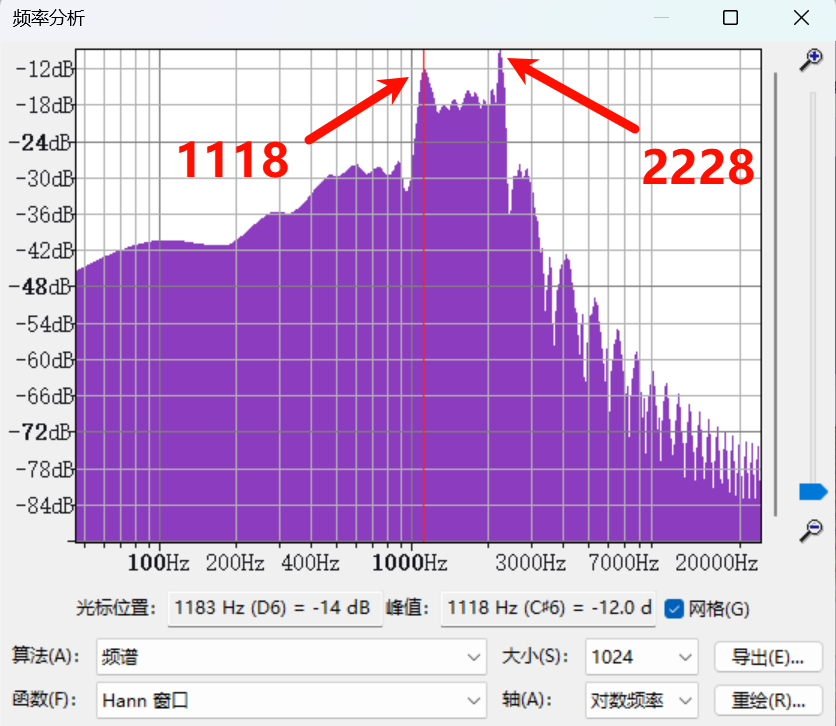
-
这里可以看出来这段音频的两个峰出现在 1118/2228（靠近经典的约 1200 Hz 和 2200 Hz），通常就对应“0/1”用的两种音调：正是经典的 AFSK调制方式
-
那么下一步就是针对AFSK的解调了
（1）首先是使用sox把wav转换成raw：把 data chunk 里的采样数据单独剥离出来，输出成裸字节流，方便后续程序直接按样本读。【WAV 是 RIFF 容器，前面有一堆头部（RIFF/fmt/data 等）；很多解析工具只接受纯 PCM 样本流（raw），而不会去解析这些头部】
1 | sox -t wav latlong.wav -esigned-integer -b16 -r 22050 -t raw latlong.raw |
【这里指定输出文件的编码格式、位深、采样率是因为后面解调的时候使用的工具multimon-ng对输入是这样要求的】
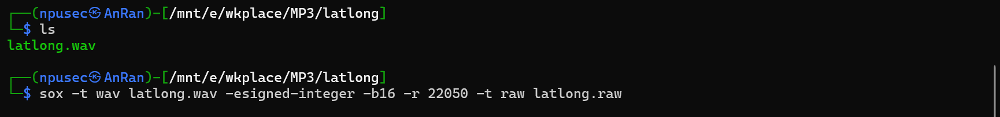
这一步是在把 WAV 里的 PCM 采样“剥壳”成解调器可直接读取的 raw 样本流，并且（通过 -r 22050）把采样率统一到解调器更好处理的值。
（2）然后就是使用工具 multimon-ng 解密
1 | multimon-ng -t raw -a AFSK1200 latlong.raw |
用
-t raw时，multimon-ng 默认把输入当成它的原生 raw 格式来读，也就是：
- 采样率：22050 Hz
- 采样格式：16-bit signed little-endian（S16LE）
- 单声道（mono）
【这也是前面提取raw文件指定相关参数的原因】
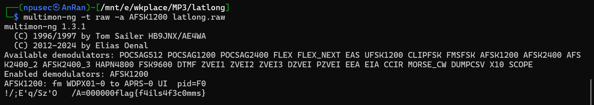
1 | flag{f4ils4f3c0mms} |
【AFSK → 解出来 AX.25 帧 → 里面的 APRS 文本里包含位置字段】
SSTV解码
题目来源：江苏工匠杯-来自银河的信号
题目特征：声音很奇怪，能听到呲呲啦啦的声音（相对于下面的WEFAX有很明显的“开头同步音/导频”，整段音频的频率变化更像“画画”，模式不同节奏不同）
1 | SSTV 是一种很“老派但很酷”的玩法：把一张图片编码成音频（听起来像怪叫/调制音），通过无线电或音频链路发出去；接收端把这段音频再解码回图片。 |
使用Audacity打开是这样的波形（波形很均匀，听起来声音很奇怪）
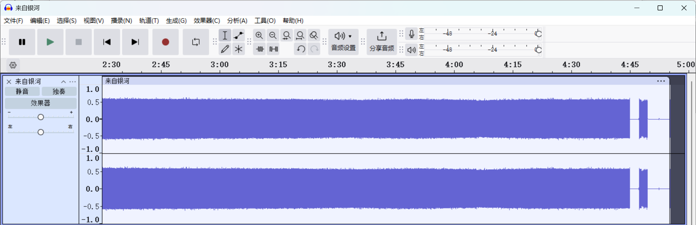
放大后是明显的正弦波
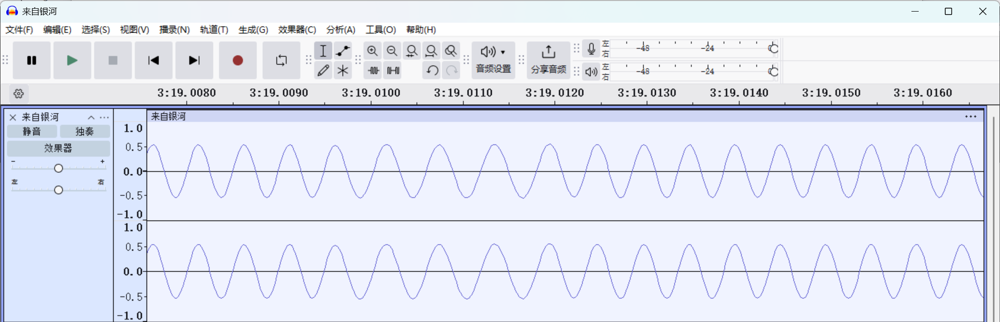
操作的话直接用慢扫描电视把题目附件作为接收到的SSTV音频进行解码（RX）为图片即可【当然这个应用还有编码/发送的功能（TX）】
（这里两个都是应该直接外放题目然后就能解码的；但是由于外放会导致出现噪声；因此我还安装了虚拟声卡)
MMSSTV
选择为解码模式
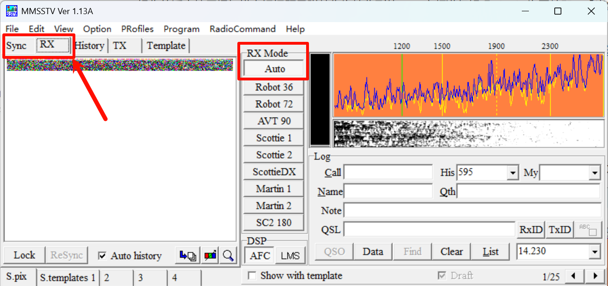
直接外放声音（有噪声导致瑕疵）【这里可以考到本来RX Mode是Auto，自动选择为Scottie DX了】：
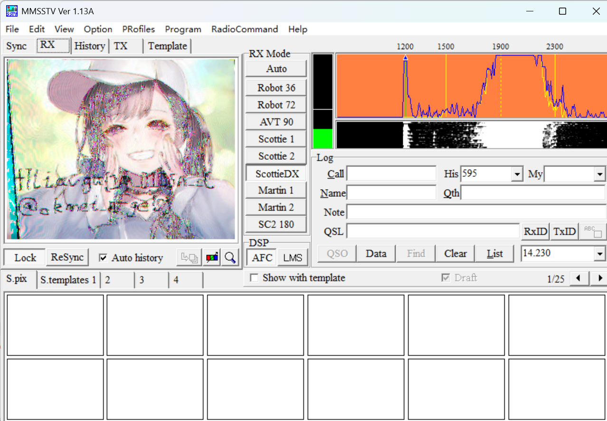
【这里可以看到解码图片的时候出现了偏移（左侧蓝色），可以通过点击ReSync校准按钮进行校准】
- MMSSTV配置虚拟声卡避免外放噪声【这里的设置与win+R → mmsys.cpl里面设置效果是一样的】
- 为了防止偏移，输入输出的虚拟声卡同一设置为44.1kHz（这里只截了一张图）
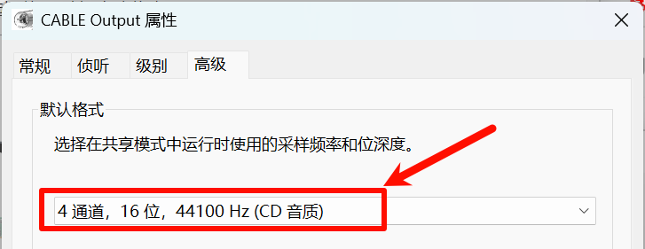
- 打开软件，点击菜单Option，选择"Soundcard Input level"。
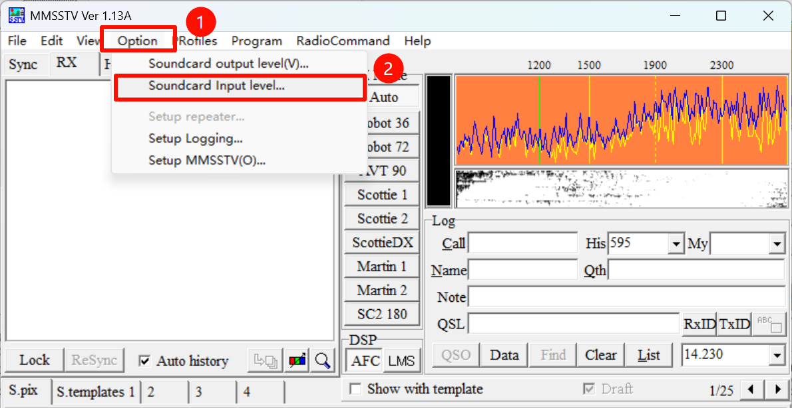
- 先点击播放，选择VB CABLE的虚拟声卡，后设为默认值，点击确定。
-
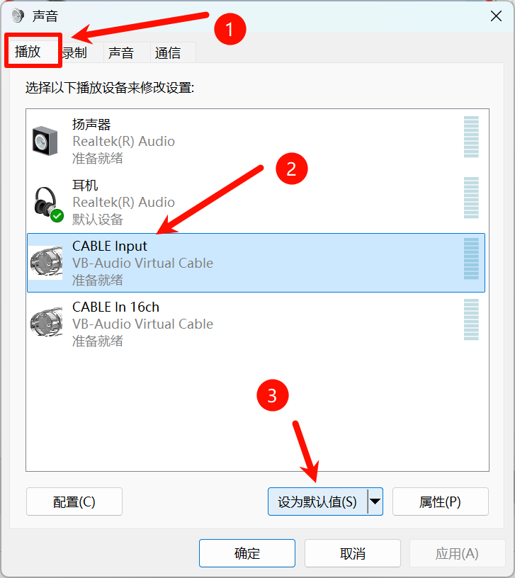
- 【注意：这回导致其他应用也用虚拟声卡作为默认；所以用完SSTV后记得调回原来的默认】
虚拟声卡本地回环+实时校正获得译码图片（比较清晰了）
1 | f7liavga{1M_0105n_cC@okmei_nFge!s} |
RX-SSTV
（这里只展示一下使用虚拟声卡获得的绘图，设置于前面的MMSSTV设置一样）
-
只不过应用里快捷打开设置是在这里
-
而且RX-SSTV支持直接在软件里打开音频附件；不用像MMSSTV那样再单独播放了（实则打开后没啥区别）
-
撕裂/错行/跳行 → 先点 ReSync
整体斜、从上到下越来越偏 → 用 Slant 调直
【实操的时候也是几秒点一下ReSync防止偏移（还是花的话可以调一下Input/Output的音量试一试30%~60%）】
WEFAX解码(ffmpeg&fldigi)
题目特征：声音也很奇怪；但是相对于上面的SSTV听起来更像“持续的噪声 + 稳定音调”，瀑布图常见两条稳定能量线（1500/2300Hz一带）
题目来源：攻防世界（Olympic CTF 2014）-Make-similar
题目提示：120 LPM
参考博客：攻防世界-misc-Make-similar_攻防世界make-similar-CSDN博客
- 首先收到的附件是一个OGG文件
OGG（常写作 .ogg）是一种开源的多媒体封装容器格式，用来把音频（也可包含视频/字幕等）按时间戳打包在一起；它本身不等于某种具体编码，最常见承载的是 Vorbis（有损压缩，早期很常用）和 Opus（更新、更高效，语音/音乐都很强）这类音频编码。OGG 采用“页面/包”式结构组织数据，便于流式传输和纠错，因此在游戏、开源软件和网络音频场景里很常见。OGG把编码器产生的包（packet）切块装进页（page）里，再按顺序串起来。文件里最基本的重复单元是 Ogg Page，每一页开头都有固定标识
OggS（4 字节魔数），后面跟着页头和数据
1 | ┌──(npusec㉿AnRan)-[/mnt/e/wkplace/MP3/Make-similar] |
-
ffprobe输出分析
-
Duration: 01:24:33.14
文件里音频的时长：1 小时 24 分 33.14 秒。 -
bitrate: 25 kb/s
容器层面的平均码率（大致值）。下面流里也会有更精确的流码率。 -
Stream #0:0: Audio: vorbis
第 0 个输入（#0）里的第 0 条流（:0），类型是音频，编码是 Vorbis（OGG 常见音频编码）。 -
22050 Hz, mono
采样率 22050 Hz，单声道。 -
fltp
解码后在 FFmpeg 内部使用的采样格式：float planar（浮点、平面布局）。这不是“文件存的格式”，更像是 ffmpeg 解码出来后怎么表示音频样本。 -
24 kb/s
这条音频流的码率（通常比上面的容器平均码率更贴近真实）。 -
start: 172254.400726 / start 172254.400726
重点在这：表示这条音频流的起始时间戳（PTS）不是从 0 开始，而是从 172254.400726 秒开始计时。
172254 秒大约是 47 小时 50 分 54 秒，也就是说：这段音频虽然只有 1:24:33，但它的时间戳被“整体平移”到了一个很靠后的时间轴位置。
-
-
然后题目提示的120 LPM是WEFAX解码中常见的一个参数
WEFAX（Weather FAX）/ Radiofax是“无线电传真”的一种：把一张黑白（有时带灰度）的图片——常见是气象图、等压线图、海况图、航海预报——用音频信号的方式在短波等无线电频段里发出来，接收端把音频解码后再还原成图像。
它的工作方式很像老式传真机：图片是一行一行扫描发送的，所以在解码软件里会看到参数像：
-
LPM（Lines Per Minute）：每分钟扫多少行，决定“图像纵向速度/比例”，常见值 120 LPM。
-
IOC：决定每行的“宽度/分辨率标准”（常见 576 或 288）。
-
中心音频频率/shift：WEFAX 通常用固定的音频中心（常见 1900 Hz）和频移（常见 800 Hz）来表示黑/白/灰度。
-
LPM的值一般与IOC的模式是绑定的，在fldigi中可以通过
Configure → Config Dialog → Modem → Wefax中查看或调整不同IOC模式下的LPM值 -
工作模式则可以直接通过 Op_Mode选择WEAFAX-IOC576（其他的模式都是各类文本/数字电报码/弱信号通信模式）
-
-
有关工具的具体介绍在后面的做题过程中会详细说一下
-
题目提示的120 LPM，指的是天气传真（WEFAX/Radiofax），一种传输单色图像的模拟模式。
-
由于解码工具要求输入格式需要时wav文件，因此需要将ogg格式文件转换成wav格式音频
（1）这里可以直接用Audacity进行转换
文件→导出音频→本地导出音频
（2）也可以用ffmpeg工具
1 | ffmpeg -i Make-similar.ogg -ac 1 -ar 22050 -c:a pcm_s16le FF_Make-similar.wav |
-
-ac 1：audio channels = 1，把音频变成单声道。
目的：很多传真/解码工具更喜欢单声道；即便原来是立体声，也会被混成 1 声道。 -
-ar 22050：audio sample rate = 22050 Hz，设置输出采样率为 22050。
目的：保持和原文件一致（之前 ffprobe 看到是 22050 Hz），避免不必要的重采样误差。 -
-c:a pcm_s16le：指定音频编码器为 PCM signed 16-bit little-endian。
解释：这是 WAV 里最常见的无压缩格式（16 位整数，小端）。
目的：兼容性最强；很多老工具不爱吃浮点 PCM 或压缩编码。
- 然后用fldigi（Multimode的免费版平替软件）转换成单色传真图像：
（1）选择工作模式为120LPM的天气传真模式
（2）配置声卡（这里我选择了同SSTV中的都是虚拟声卡，防止耳机听到）Configure → Config Dialog → Soundcard → Devices
（3）在File中打开音频wav文件作为输入，选择playback
（4）在打开文件后会自动开始播放，然后要根据解码结果进行微调：主要是Tilt与Align
-
说明一下其他的几个参数
-
AFC = Automatic Frequency Control（自动频率控制）：自动跟踪信号的最佳中心频率，让解码窗口始终对准信号（如底部显示的 1900Hz 附近）。不太适合：播放文件（频率本来就固定），AFC 可能会追着噪声/瞬时能量跑，导致中心频率抖，从而影响同步。
-
SQL = Squelch（静噪/静音门限）：只有当信号强度/信噪比超过某个门限时，才放行给解码器；否则当作没信号（避免纯噪声时乱解码）。建议（文件解 WEFAX）：先 关 SQL（或把门限调得很低），保证整段音频都进解码器
-
没动过的三个参数
-
参数 作用 效果 使用时机 常见副作用 Auto 自动电平/自动对比度（自动阈值），让黑白范围自动拉开 开：画面通常更“有对比”、更容易直接看清；亮度会自动跟随信号变化 录音电平忽大忽小、刚开始想快速出可读图时 可能“忽明忽暗”、某些区域对比度跳动、灰度不稳定 Noise 降噪/平滑（去掉噪点、毛刺） 开：背景更干净、噪点变少、线条更顺滑 底噪大、压缩失真明显、画面满是颗粒点时 细节会被抹掉一点：小字变糊、细线变粗 Bin（数值） 亮度量化/二值化力度（影响灰度层次与黑白“硬度”） 数值更小：更“硬黑白”、字更黑更冲；数值更大：灰度更细腻、过渡更平滑 想看小字/flag：把 Bin 调小一点（如 64~96）；想看地图/灰度细节：保持 128 或略大 Bin 太小：灰度细节丢、背景易脏；Bin 太大：文字偏灰、对比不够
-
-
fldigi解析出来的图片默认保存路径：C:\Users\AnRan\fldigi.files\images
-
fldigi内部播放文件看不到进度条，想要调进度只能使用别的软件播放然后换声卡（类似SSTV那样）
（5）等待……这个音频很长，但是实际上有用的内容会循环出现，就是下面解析出来的这一段图片文字
提取文本也就是
1 | section 1 of 1 of file rfax_man |
1 | ┌──(npusec㉿AnRan)-[/mnt/e/wkplace/MP3/Make-similar] |
- gzip压缩包，解压rfax_man.gz得到rfax_man.py文件
1 | import socket,os,sys,hashlib |
音频中的隐写
MP3Stego
题目特征：mp3文件，但是有相关的密码的提示（长得像是密码的字符串）
这里题目描述直接给出了密码字符串 — syclovergeek
直接用工具
1 | Decode.exe -X -P syclovergeek xuan_zhuan_tiao_yue.mp3 |
自动在mp3文件所在的路径解码出结果
1 | xuan_zhuan_tiao_yue.mp3.txt |
Stegolsb
题目来源：n00bzCTF2023-LSB
题目特征：wav文件可能出现LSB隐写
1 | WAV与MP3文件对比 |
【这个工具就是一个python的包，我直接装到web虚拟环境中了】
1 | # (web) PS E:\wkplace\MP3\lsb> |
stegolsb：工具主命令（Python 包安装后提供的 CLI）。wavsteg：处理 WAV 音频 的 LSB 隐写/提取模块。-r：recover/read（提取模式）。
含义：不是往 WAV 里藏数据，而是从 WAV 里恢复隐藏内容。-i .\chall.wav：输入文件（input）。
.\表示当前目录下的chall.wav。-o flag.txt：输出文件（output）。
提取到的数据会写入flag.txt。注意：虽然叫.txt，但输出可能是二进制，只是你给它取了这个后缀。-b 100：提取 100 字节（bytes）。
工具会按顺序从音频采样的 LSB 中拼比特，凑够 100 字节就停止并写入输出文件。
补充：这条命令里没有显式指定 -n（使用多少个 LSB 位），那就用工具的默认值（不同版本默认可能是 1 或 2）。如果提取结果像乱码，最常见的就是需要试 -n 1..8 或者调整 -b。
1 | # 补充：也可用stegolsb进行图片的lsb隐写提取；但是只有rgb顺序，无α位 |
DeEgger Embedder
题目特征：且会比正常文件大很多，模板外冗杂内容（音频文件）；观察二进制文件里面可能找到DeEgger文本字样（图片）；
题目来源：攻防世界-CISCN[pyHAHA]
相似的题目（没找到题附件）：巨人的秘密
参考：攻防世界 Misc高手进阶区 6分题 pyHAHA-CSDN博客
（前面是pyc的文件修复部分）
- 一进去就看到了两个倒着的flag，而且明明是pyc后缀的文件但是用模板解析失败了。
- 由于pyc结构就是**[固定长度的文件头 header（因版本而异）] + [marshal 序列化后的 code object 数据]**，没有固定的文件尾；这里先试着反序文件。
1 | f = open('rePyHaHa.pyc','wb') |
-
但是模板依然只解析出来了后面的file部分，应该是缺少文件头了；这里需要根据特定的解释版本python补上不同的pyc文件头**（一般也就是四字节的magic number）**
-
顺便补充一下pyc文件的文件格式：
（1）python3.7+
头固定 16 字节（小端序 little-endian）：
| 偏移 | 长度 | 含义 |
|---|---|---|
| 0x00 | 4 | magic number（版本标识） |
| 0x04 | 4 | bitfield / flags |
| 0x08 | 8 | (分两种格式)：要么是 timestamp+size，要么是 hash |
flags 决定 0x08 开始的 8 字节是哪种：
- 时间戳型（timestamp-based）（最常见）
- 0x08…0x0B：
mtime（源码最后修改时间，Unix 时间戳，uint32） - 0x0C…0x0F：
source_size（源码文件大小，uint32）
- 0x08…0x0B：
- 哈希型（hash-based，PEP 552）
- 0x08…0x0F：
source_hash（8 字节哈希） flags里低位会标识“这是 hash-based”，另一个位通常表示是否 check_source（是否强制校验源码）。
- 0x08…0x0F：
（2）python3.3~3.6
头一般是 12 字节：
| 偏移 | 长度 | 含义 |
|---|---|---|
| 0x00 | 4 | magic number |
| 0x04 | 4 | mtime（时间戳） |
| 0x08 | 4 | source_size（源码大小） |
（3）python2.x
头一般是 8 字节：
| 偏移 | 长度 | 含义 |
|---|---|---|
| 0x00 | 4 | magic number |
| 0x04 | 4 | mtime（时间戳） |
- 常见的不同版本的magic值（加黑的是验证过的）
| 常见度 | Python 版本 | .pyc 头长度 |
常见 magic（文件开头 4 字节 hex） |
|---|---|---|---|
| 很常见 | 2.7 | 8B | **** |
| 常见 | 3.8 / 3.9 / 3.10 / 3.11 | 16B | 3.8: 55 0D 0D 0A / 3.9: 61 0D 0D 0A / 3.10: 6F 0D 0D 0A / 3.11: A7 0D 0D 0A |
| 也常见 | 3.7 | 16B | 42 0D 0D 0A |
| 偶尔 | 3.6 | 12B | 33 0D 0D 0A |
也可以直接使用对应版本的python的虚拟环境，然后代码查看：
1 | # python3.x查看magic代码 |
【标准 CPython 的 .pyc magic 的后两字节应当是固定的 0D 0A；如果十六进制不对的话就要考虑是不是文件头缺失需要先修补文件了（当然magic在的话直接file就显示是什么文件而不是显示data了）】
关于magic的这一篇博客说的比较好：Python Uncompyle6 反编译工具使用 与 Magic Number 详解-CSDN博客
-
总结：
- 在Python3.7及以上版本的编译后二进制文件中，头部除了四字节Magic Number，还有四个字节的空位和八个字节的时间戳+大小信息，后者对文件反编译没有影响，全部填充0即可；
- Python3.3 - Python3.7（包含3.3）版本中，只需要Magic Number和八位时间戳+大小信息
- Python3.3 以下的版本中，只有Magic Number和四位时间戳
-
但是关键是怎么在magic缺失的情况下确定当前的pyc文件应该补充的是哪一个magic头（即如何确定python的版本）：这里拷打GPT获得以下答案，但是有待实战考证：
- 找到疑似
'c'偏移off - 分别尝试读取
n = 4,5,6个 int - 读完后看下一个字节是否是常见 marshal tag（比如
's','(','u'等）
- 找到疑似
| 版本范围（粗） | 'c' 后的裸 int 个数（四字节为单位去数） |
这些 int 大致是什么 |
|---|---|---|
| Python 2.x | 4 个 | argcount, nlocals, stacksize, flags |
| Python 3.0–3.7 | 5 个 | argcount, kwonlyargcount, nlocals, stacksize, flags |
| Python 3.8–3.10 | 6 个 | argcount, posonlyargcount, kwonlyargcount, nlocals, stacksize, flags |
- 以这个题目为例：
因此应该是对应的2.x版本的python文件，其中常见的就是2.7，因此补充magic头03 F3 0D 0A
→这样补充完之后就可以正常的反编译了
1 | # 这里就能反编译了（后面就是re的事了） |
- 额跑题了……这里应该说的是隐写工具DeEgger Embedder
这里能明显看出来010Editor模板解析出来之后data字段后面还有很多内容：就是之前看的拼进去的压缩包了。
直接foremost提取即可：获得一个伪加密的压缩包：
修改后解压出mp3文件：这个模板解析后，最后一帧后面还有很多内容：
使用工具进行提取：
得到一堆base32编码内容，解码后发现没有什么用；这里发现那些内容解码后，后面带有奇怪的标，而且再编码回去与原来的不同了→存在base32隐写
1 | # base32隐写解密脚本 |
（解密后获得一堆01序列，根据前面反编译的pyc代码写解密脚本即可……）
base32隐写原理：利用 Base32 在出现
=填充（padding）时，末尾会存在无效/被丢弃的比特位。很多解码器在解码时不会严格校验这些无效位是不是 0，于是就可以把这些无效位改掉来藏信息——改了编码串，但解出来的原始字节不变。
SilentEye
题目特征：需要密码时可以尝试使用该工具；由于本质是lsb隐写，因此一般是wav文件
题目来源：Bugku-哥们在这给你说唱
之前还找到过一道题，附件直接放在工具安装的文件夹里了2015 广东省强网杯 - Little Apple
参考博客：0xGame2022 Week1~4 Misc Offical Writeup & 全附件 - zysgmzb - 博客园
获得密码
1 | pass:15gmzzgnscltcltdz |
DeepSound
题目特征：需要密码的音频隐写；题目描述可能暗示deepsound；也是常见于wav文件
接上一节拿到了密码，想到要用密码加密的工具
使用 DeepSound 工具打开文件，输入密码
即可获得flag
1 | 0xGame{5d4d7df0-6de7-4897-adee-e4b3828978f8} |
音频文件构成
这里的相关知识点见前言中的汇总
Copyright位隐写
题目特征：不同帧之间的copyright位在0/1之间不断变化
这个题目就是因为发现某些帧的copyright是1，有的是0；因此怀疑这里可能是隐藏的信息的。
【010 里 copyright : 1 里的 : 1 不是值，只是表示占一个bit；值要看后面的value】
在提取的过程中发现一个问题。该MP3文件每一帧的长度不固定，有的是414H，有的是415H
翻看资料得知帧长度的变化和padding填充位有关。
1 | 帧长度是压缩时每一帧的长度，包括帧头的4个字节。它将填充的空位也计算在内。 |
观察本文件得知如果padding位为1，帧长度就是415H，padding位为0，帧长度就是414H。
查询得知第一帧的起始位置为984484
又因为帧头为4个字符，padding_bit位于第三个字节的倒数第二位，而copyright位于第四个字符的倒数第四位。所以从984486开始查找，向后读取一个字节提取padding_bit，再向后读取一个字节提取copyright。
故写出一下python代码进行copyright位的提取。
1 | # coding:utf-8 |
Private位隐写
题目来源：攻防世界-nice_bgm
参考：【攻防世界】nice_bgm - wyuu101 - 博客园
题目特征：正常默认文件的private都是0，如果出现1的话需要注意了
（这里也有个小技巧可以提取一下前8帧的private位，看看是不是真的存在隐写）
提取前八个得到 01000110，转为 ASCII 码是 F →→→ 基本可以确定是private位隐写了
这里写脚本与copyright位隐写类似，需要解决确定帧起始位置以及不同的帧长度不同的问题
确定第一帧 mf[0] 的起始位置是235984
private_bit 为 4字节帧头中的24位 ，所在的字节为第 3 个字节，因此该字节对应的地址为 235984+2=235986，即为第一个 private_bit 开始地址【这是另一篇博客的脚本，可以与上面的copyright位隐写的脚本对比来看】
1 | import textwrap |
注意：脚本仅为解题编写，并不严谨。MP3为逐帧解析的文件，本脚本默认把所有帧都是相同的比特率和采样率，但实际上有可能存在帧之间采样率与比特率不一致的情况，严谨的写法应该是先读取帧头部的数据并根据官方技术文档的定义判定比特率和采样率，再计算出实际的帧大小。
Original位隐写
题目特征：不同帧的original位不同
参考：ctfshow单身杯2024 Writeup By V3geD4g_ctfshow 没耳朵都可以-CSDN博客
CTFshow DSBCTF 官方WP （本地该题目的路径下留存了文档）
- 实际常见情况：如果整文件是同一个编码器一次性编码出来的，通常会看到 所有帧都一样（全 0 或全 1），因为编码器会用同一套 header 标志。
【这个题也是很抽象，不是直接用前几帧直接隐写ASCII编码的字符串，而是整个文件的所有帧合着隐写进去一个01描述的图片，因此由于跨度很大比较难发现original位的变化】
- original位的提取，沿用之前的即可：只需要修改一下帧起始地址、总帧数以及帧长度（这里是414h与415h）。另外找到一个简洁但是可能不准确的帧头匹配方式
1 | ''' |
- 提取出来的数据是这样很多0掺杂着1，应该就是1表示黑色，0表示白色这样的作图的效果；只需要找到何时的长与宽画出图来就行
- 作图的话有一个巧思：不用原来抽象的0与1进行填充，而用空格与黑方框填充
1 | original_bit = '█' if (b3 & 0x04) else ' ' |
这样就可以直接在文本编辑器里通过放大缩小比例尺看出来flag了【但是实操的时候我没有调出来，notepad++不支持一个字符一个字符的重排调整】
- 另一种基础的就是爆破找到合适的比例画出图（最暴力的从宽是200开始涨到500）：
1 | import os |
问题就是产生大量的图片需要一点点看是哪一个【这里还存了一个不保存图片直接查看的版本show_draw.py】；而且爆破的范围选取很重要
最后在301像素的宽的时候找到（这打印体的8写的挺有意思）
1 | ctfshow{4c7bdef8-6266-49c2-80ed-c6ceaf5ebf5d} |
其他有关音频的特性
Velato 编译（Mid）
题目特征：MIDI 文件优先考虑 Velato 编译
题目来源：Bugku/0xGame-听首音乐？
参考博客：0xGame 2022 Misc WP – 之寒的小站
0xGame2022 Week1~4 Misc Offical Writeup & 全附件 - zysgmzb - 博客园
MIDI 文件（通常指标准 MIDI 文件，SMF，扩展名 .mid）是一种面向事件（event-based）的时间序列数据容器：它以离散事件的方式记录音乐表演控制信息（如音符按下/抬起、力度、控制器、节目切换与速度等），用于在软硬件系统间交换可复现的演奏过程；其数据本身不包含波形音频。
一个 MIDI 文件 = 1 个 Header Chunk（MThd） + n 个 Track Chunk（MTrk）
| 层级/字段（SMF 典型结构） | 简述 |
|---|---|
Chunk Type（MThd / MTrk） |
块类型：文件头块/轨道块（magic） |
| Chunk Length | 该块数据区长度（字节数） |
| Header: Format | 文件格式：0（单轨）、1（多轨同步）、2（多段独立） |
| Header: ntrks | 轨道块数量 |
| Header: Division | 时间基准：tick/四分音符（PPQN）或 SMPTE 时间码 |
| Track: Event Δtime | 与前一事件的时间增量（tick），定义事件在时间轴上的位置 |
| Track: Status Byte | 事件类型与 MIDI 通道（如 Note On/Off、Control Change 等） |
| Track: Data Bytes | 事件参数（如音高 key、力度 velocity、控制器号与值等） |
Meta Event（以 0xFF 开头） |
非实时“文件级”信息：速度（Tempo）、拍号、调号、轨道名、结束标记等 |
| SysEx Event | 系统独占消息：厂商/设备特定数据（如音色设备配置等） |
【Track是文件里并行的事件流容器，有几个事件流就有几个Track】
在 上面为代表的这种Format 1 里常见的组织方式是：
- Track 0：Conductor/控制轨
- 放 Tempo/拍号/调号/Marker 等 Meta
- Track 1…N：演奏轨
- 放音符、控制器、换乐器等通道事件（也可能夹杂少量 Meta，比如轨道名）
Velato 是一种实验性编程语言（esoteric language），其设计理念在于将音乐结构作为形式语言的载体：程序的语法与语义由音高序列及其相对关系（如相对“根音”的音程映射与根音切换机制）所编码，从而实现“可听化的源代码表示”。
与 MIDI 的关系可概括为“表示层—解释层”的分离：标准 MIDI 文件（SMF）提供了规范化的事件序列容器（轨道、时间增量与音符事件等），而 Velato 在此容器之上定义解释规则，通常从 MIDI 轨道中的 Note 事件抽取音高与时序信息，并将其映射为语言的记号、控制结构与运算过程。因此，MIDI 在该场景中承担的是程序表示/编码格式的角色，而 Velato 则给出从该表示到可执行计算的语义赋值（semantic interpretation）。
- 直接编译mid文件即可，会在编译器所在文件夹里生成exe文件
1 | (base)PS D:\MiscTools\MP3\Velato\Velato_0_1> .\Vlt.exe E:\wkplace\MP3\听首音乐\music.mid |
- 然后运行exe文件即可看到
1 | (base)PS D:\MiscTools\MP3\Velato\Velato_0_1> .\music.exe |
- 这里拿到的一个巨大的数字，这就涉及到另一个常见的操作n2s（Number to String）
给定十进制大整数
N把
N视为 大端（big-endian） 的二进制数转成对应的 bytes
再把 bytes 当 ASCII/UTF-8 解码，就能看到可读字符串
这里可以直接用自带的库函数n2s进行操作
1 | (web)PS C:\Users\AnRan> python |
也可以用密码学的库里面的long_to_bytes函数
1 | from Crypto.Util.number import * |